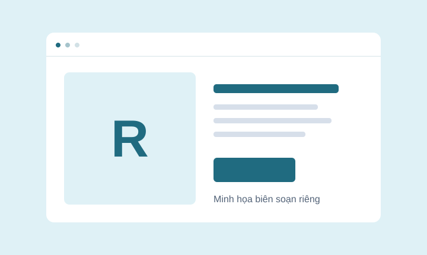

Web Dev for Beginners
Hiểu các phần của một trang web trước khi nhờ AI viết và sửa mã.

Hình minh họa tự tạo, không phải ảnh chạy thử repo.
Repo là nơi tác giả lưu mã và tài liệu. Mở repo không tự cài phần mềm lên máy bạn.
Chỉ chọn khi bạn đang dùng React.
Tham khảo hướng dẫn tối ưu React khi đã có dự án dùng công nghệ này.
Đối chiếu nguồn ngày 19/10/2026. Website miễn phí; công cụ ngoài có thể có phí riêng.
Skill tổng hợp hướng dẫn hiệu năng React và Next.js. Không cần cài để hoàn thành landing page tĩnh của bài nhập môn.
Chọn theo việc bạn đang làm và điều kiện thực tế. Đây là nhận xét biên tập để định hướng, không phải chứng nhận mọi tính năng đều đã hoạt động.
Dự án React phù hợp; kiểm tra hướng dẫn tích hợp của công cụ.
Đọc tài liệu gốc và yêu cầu cụ thể; không suy từ tên skill rằng mọi agent đều sử dụng được.
Đọc yêu cầu tại thư mục gốc trước. Bạn không cần tài nguyên này để làm bài landing page HTML/CSS đầu tiên.
Xem bài thực hành nhập mônKhông tải lại hoặc phân phối mã/tài liệu gốc trong bản mẫu này. Nhãn đã thử chỉ được bổ sung sau kiểm chứng đúng môi trường.
Các tài nguyên có mục đích khác nhau; không mặc định thay thế lẫn nhau.
Hiểu các phần của một trang web trước khi nhờ AI viết và sửa mã.

Xem các ví dụ nhỏ để hiểu cấu trúc, bố cục và cách trình duyệt hiển thị.

Một nguồn tham khảo để rà soát giao diện theo các quy tắc web.